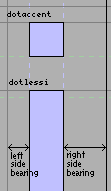
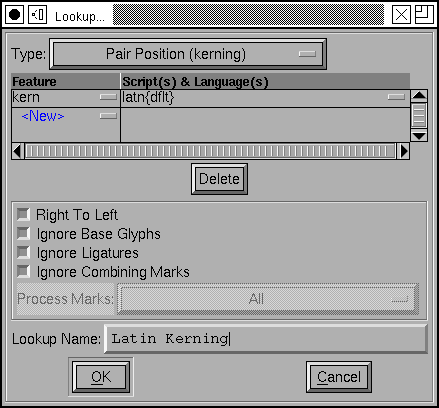
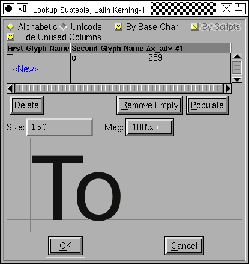

After you have created the shapes of your glyphs you must next figure out the spacing between glyphs. The space between any two glyph has two components, the space after the first glyph, and the space before the second glyph. In a left to right world these two are called the right side bearing and the left side bearing respectively.
The left side bearing may be changed by the simple expedient of
Edit->Select All (in the outline view) and then dragging
the selected objects to the appropriate place. The right side bearing may
be changed by selecting the advance width line and adjusting it
appropriately.
However it is generally better not to set the metrics of a single glyph in
isolation, you should see the glyph in the context of other glyphs and set
it from that perspective. Use the Window->Open
Metrics Window command.

Any glyphs selected in the fontview (when you invoke the metrics view) will
be displayed in the metrics view. You may change which glyphs are displayed
by either typing new ones in to the text field at the top of the view, or
by dragging a glyph from the fontview.
From here you may adjust any glyph's metrics by typing into the textfields below it, or you may select a glyph (by clicking on its image) and drag it around (to adjust the left side bearing), or drag its width line (to adjust its right side bearing).
If you want to generate a "typewriter" style font (where all glyphs have
the same width) execute an Edit->Select All from the fontview
and then Metrics->Set Width. This will set the widths of
all glyphs to the same value. After doing that you might also want to execute
Metrics->Center in Width to even out the left and right spacing
on each glyph.
 If
all this manual operation seems too complicated, try
If
all this manual operation seems too complicated, try
Metrics->Auto Width.
This will automagically assign widths to glyphs. These widths are not up
to professional standards, but they are generally reasonable approximations.
FontForge provides some support for the vertical metrics needed for CJK fonts.
First you must tell FontForge that this font should contain vertical metrics,
do this with Element->Font Info->General->Has Vertical
Metrics. Then in each outline glyph enable VMetrics in the Layers
palette.
You should now see a vertical advance line somewhere underneath your glyph. You may drag this line just as you would the horizontal advance (width) line.
You might imagine that there would be an easy way to set this seemingly important quantity. Unfortunately there is not.
Typographically ept applications will allow users to adjust baseline to baseline spacing, so the default value may not be all that relevant.
If you are careful in setting the left and right side-bearings you can design your font so that the spacing looks nice in almost all cases. But there are always some cases which confound simple solutions.
Consider "To" or "Av" here the standard choices are inappropriate. The "o" will look better if it can slide more to the left and snuggle under the top bar of the "T". This is called kerning, and it is used to control inter-glyph spacing on a pair-by-pair basis.
 |
 |
In the above example the left image shows the unkerned text, the right shows the kerned text. To create a kerned pair in the metrics window, simply click on the right glyph of the pair, the line (normally the horizontal advance) between the two should go green (and becomes the kerned advance). Drag this line around until the spacing looks nice.
Sadly that statement is a simplification... Before you can create a kerning
pair you must create a kerning lookup (see
the section on lookups). Once again
you bring up the Element->Font Info->Lookups pane and this time you
must select the GPOS (Glyph Positioning) tab at the top of the pane. Once
again you press [Add Lookup]. This time the lookup type is "Pairwise
Positioning", and the feature is "kern" (or perhaps "vkrn" if you want to
do vertical kerning).
Once you have created your lookup you again select it and press the [Add Subtable] button (which asks you to name the subtable). Then FontForge will ask you whether you want a subtable of kerning pairs or kerning classes.
If you have many glyphs which have similar kerning features you might wish
to create a set of kerning classes
(which might say that A, À, Á, Â, Â, Ã and
Ä all kern alike). However for this example you want a kerning pair
subtable.
Then FontForge will popup a dialog allowing you to set the kerning subtable directly. You may set your kerning pairs from here, though I prefer the metrics view myself because you can see more glyphs and so get a better feel for the "color" of the font.
(Some glyph combinations are better treated by creating a ligature than by kerning the letters)
FontForge has equivalent support for vertical kerning. It can read and write vertical kerning information from and to truetype, opentype and svg fonts. It allows you to create vertical kerning classes. The metrics window has a vertical mode in which you can set vertical kerning pairs. Finally it has a command which will copy horizontal kerning information to the vertically rotated glyphs (That is, if the combination "A" "V" is horizontally kerned by -200, then "A.vert" "V.vert" should be vertically kerned by -200.
(Vertical kerning is only available if the font has vertical metrics)